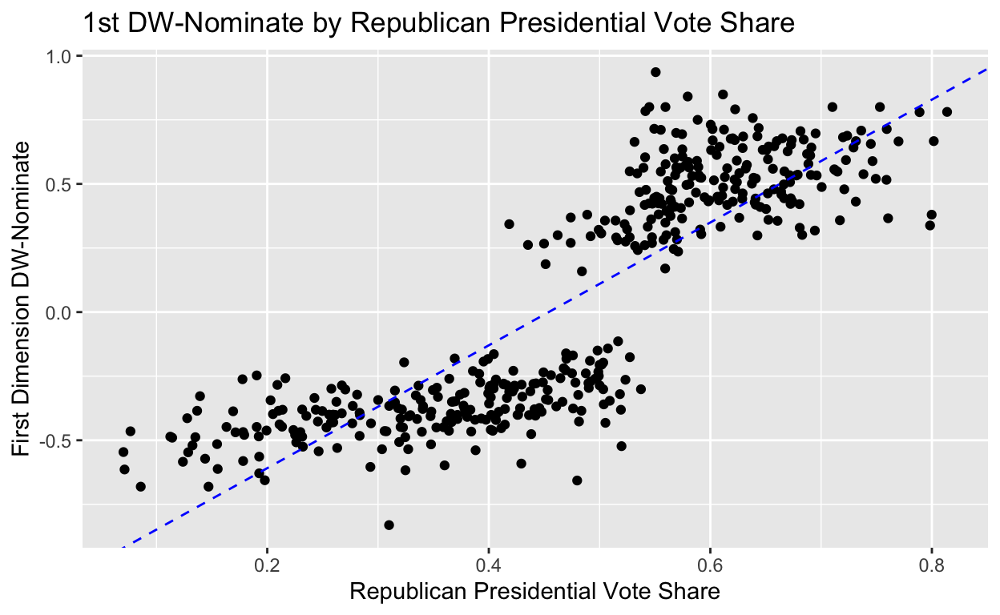

Party or Constituents? What matters most for Members of Congress?
Party or Constituents? What matters most for Members of Congress? The polarization and gridlock in Congress is a big challenge for members of Congress. Given how often members are divided into “yeas” and “nays” along the party line, it may seem evident that parties matter. Parties allow constituents to support candidates who share similar ideologies, beliefs, and other characteristics that are important to them when looking at who to support. Oftentimes, when casting for ostensibly party votes, members of Congress vote with fellow party members in spite of their disagreement of the policy or is it due to their agreement? In other words, are parties solely correlated with legislator’s preferences rather than an institution that influences and disciplines its membership. Thus, in this research report, I hope to analyze which one has a stronger role in determining how a member votes; their constituents or their party.
In this research study, I plan to measure district ideology using presidential vote share in the congressional districts. I’ll be looking into each district’s average Republican vote share from the 2012, 2016, and 2020 Presidential elections. The dependent variable in my analysis will be each member’s DW-Nominate score and the explanatory variable is each district’s ideology and the member’s political party.
In order to measure the members’ ideological position, I’ll use the first dimension DW-Nominate scores. DW-Nominate scores are a measurement of member’s ideological positons based on their roll-call votes. They are determined by ctaking down every roll-call cote a member takes and seeing how often a member takes a liberal position on a legislation versus how often a member takes a conservative position on a legislation. A lower score (closer to -1) indicates a a more liberal member, and a higher score (closer to 1) indicates a more conservative member.
• district_code: Congressional district number • state_abbrev: State abbreviation • party_code: Member’s party (Democrat =100 and Republican =200) • bioname: Name of member • nominate_dim1: First dimension of DW-NOMINATE • nominate_dim2: Second dimension of DW-NOMINATE • Biden20: Biden’s district vote share in 2020 • Trump20: Trump’s district vote share in 2020 • Clinton16: Clinton’s district vote share in 2016 • Trump16: Trump’s district vote share in 2016 • Obama12: Obama’s district vote share in 2012 • Romney12: Romney’s district vote share in 2012
This study is an example of a cross-sectional study; where we take the presidential vote share in each district over time in the 2012, 2016, and 2020 presidential elections. This changes by what individuals vote and how (meaning which candidate). This could stay consistent in each district or change, but we are looking at the overall district’s average Republican voter share from these elections, not individually.
# A tibble: 445 × 13
district_…¹ state…² party…³ bioname nomin…⁴ nomin…⁵ Biden20 Trump20
<dbl> <chr> <dbl> <chr> <dbl> <dbl> <dbl> <dbl>
1 1 AK 200 YOUNG,… 0.283 0.022 43 53.1
2 1 AL 200 CARL, … 0.524 0.521 35.3 63.7
3 2 AL 200 MOORE,… 0.633 -0.076 35.1 63.9
4 3 AL 200 ROGERS… 0.36 0.463 33.7 65.3
5 4 AL 200 ADERHO… 0.38 0.576 17.8 81.2
6 5 AL 200 BROOKS… 0.646 -0.404 35.7 62.7
7 6 AL 200 PALMER… 0.682 0.091 31.8 67
8 7 AL 100 SEWELL… -0.393 0.402 70.8 28.5
9 1 AR 200 CRAWFO… 0.432 0.487 27.9 69.1
10 2 AR 200 HILL, … 0.444 0.25 44.3 53.1
# … with 435 more rows, 5 more variables: Clinton16 <dbl>,
# Trump16 <dbl>, Obama12 <dbl>, Romney12 <dbl>, republican <chr>,
# and abbreviated variable names ¹district_code, ²state_abbrev,
# ³party_code, ⁴nominate_dim1, ⁵nominate_dim2congress <- congress|>
mutate(
Rpres_1220 = ((Romney12)/(Romney12 + Obama12) + (Trump16)/(Trump16 + Clinton16) + (Trump20)/(Biden20 + Trump20))/3)
congress# A tibble: 445 × 14
district_…¹ state…² party…³ bioname nomin…⁴ nomin…⁵ Biden20 Trump20
<dbl> <chr> <dbl> <chr> <dbl> <dbl> <dbl> <dbl>
1 1 AK 200 YOUNG,… 0.283 0.022 43 53.1
2 1 AL 200 CARL, … 0.524 0.521 35.3 63.7
3 2 AL 200 MOORE,… 0.633 -0.076 35.1 63.9
4 3 AL 200 ROGERS… 0.36 0.463 33.7 65.3
5 4 AL 200 ADERHO… 0.38 0.576 17.8 81.2
6 5 AL 200 BROOKS… 0.646 -0.404 35.7 62.7
7 6 AL 200 PALMER… 0.682 0.091 31.8 67
8 7 AL 100 SEWELL… -0.393 0.402 70.8 28.5
9 1 AR 200 CRAWFO… 0.432 0.487 27.9 69.1
10 2 AR 200 HILL, … 0.444 0.25 44.3 53.1
# … with 435 more rows, 6 more variables: Clinton16 <dbl>,
# Trump16 <dbl>, Obama12 <dbl>, Romney12 <dbl>, republican <chr>,
# Rpres_1220 <dbl>, and abbreviated variable names ¹district_code,
# ²state_abbrev, ³party_code, ⁴nominate_dim1, ⁵nominate_dim2#Scatterplot with regression line
mod01 <- lm(data=congress, nominate_dim1 ~ Rpres_1220)
mod01
Call:
lm(formula = nominate_dim1 ~ Rpres_1220, data = congress)
Coefficients:
(Intercept) Rpres_1220
-1.088 2.396 summary(mod01)
Call:
lm(formula = nominate_dim1 ~ Rpres_1220, data = congress)
Residuals:
Min 1Q Median 3Q Max
-0.71857 -0.19262 0.02463 0.18058 0.70452
Coefficients:
Estimate Std. Error t value Pr(>|t|)
(Intercept) -1.08799 0.03522 -30.89 <2e-16 ***
Rpres_1220 2.39604 0.06983 34.31 <2e-16 ***
---
Signif. codes: 0 '***' 0.001 '**' 0.01 '*' 0.05 '.' 0.1 ' ' 1
Residual standard error: 0.2422 on 442 degrees of freedom
(1 observation deleted due to missingness)
Multiple R-squared: 0.7271, Adjusted R-squared: 0.7264
F-statistic: 1177 on 1 and 442 DF, p-value: < 2.2e-16scatterplot01_lm <- ggplot(congress) +
geom_point(aes(x= Rpres_1220, y= nominate_dim1)) +
labs(title="1st DW-Nominate by Republican Presidential Vote Share",
x="Republican Presidential Vote Share",
y="First Dimension DW-Nominate") +
geom_abline(slope=mod01$coefficients[2], intercept = mod01$coefficients[1],
color="blue",
linetype="dashed")
scatterplot01_lm
By looking at the graph above, where we measure the the Member of Congress first dimension DW-Nominate scores (vertical axis) vs. the Republican vote share in their district (horizontal axis), the district ideology is predictive of member ideology. We see how districts with less Republican Presidential Vote share tend to have members of congress who lean more liberal, and those with a higher number of Republican Presidential votes have members of congress who leans more conservative. The results of the estimated intercept and coefficient on the republican voter share (mod01) are -1.088 (estimated intercept) and 2.396 (estimated coefficient). The estimated intercept, -1.088, shows that if the republican voter share is 0, then we’d predict the member of congress’ to have a first-dimension dw-nominate score of -1.088 (very liberal). The Rpres_1220 coefficient shows that for every one unit increase in the republican voter share of the district, we’d predict an increase of the member’s first-dimension dw-nominate score by 2.396 points on average. These coefficients are statistically significant because they have a p-value lower than 0.05. They are also substantively significant because it creates a meaningful effect in our rpres_1220 variable; the estimated coefficient effect are not too small to not create an effect.
Call:
lm(formula = nominate_dim1 ~ Rpres_1220 + republican, data = congress)
Residuals:
Min 1Q Median 3Q Max
-0.42739 -0.07335 -0.00132 0.07612 0.47083
Coefficients:
Estimate Std. Error t value Pr(>|t|)
(Intercept) -0.60350 0.02177 -27.73 <2e-16 ***
Rpres_1220 0.64489 0.05853 11.02 <2e-16 ***
republican1 0.71354 0.01927 37.03 <2e-16 ***
---
Signif. codes: 0 '***' 0.001 '**' 0.01 '*' 0.05 '.' 0.1 ' ' 1
Residual standard error: 0.1196 on 441 degrees of freedom
(1 observation deleted due to missingness)
Multiple R-squared: 0.9336, Adjusted R-squared: 0.9333
F-statistic: 3099 on 2 and 441 DF, p-value: < 2.2e-16coef(mod02)(Intercept) Rpres_1220 republican1
-0.6035025 0.6448851 0.7135428 scatterplot03 <- ggplot(congress) +
geom_text(aes(x=Rpres_1220, y=nominate_dim1, label= if_else(republican == 1, "R", "D"),
color=factor(republican))) +
labs(title="1st DW-Nominate by Republican Vote Share",
x="Republican Presidential Vote Share",
y="First Dimension DW-Nominate") +
geom_abline(intercept= mod02$coefficients[1],
slope = mod02$coefficients[2],
color="blue",
linetype="dashed") +
geom_abline(intercept= mod02$coefficients[1] + mod02$coefficients[3],
slope = mod02$coefficients[2],
color="blue",
linetype="dashed") +
scale_color_manual(name="Party", labels=c("Democrats", "Republicans"), values=c("Blue", "Red"))
scatterplot03The scatterplot above is a recreation of the scatterplot I first introduced in this research paper. Nevertheless, I hava labeled the Democratic MCs with a blue “D” And Republican MCs with a red “R”. For this graph, I have also ran a linear regression of the MC’s DW-Nominate scores (dependent variable) on the district ideology variable and an indicator variable for Republican (two explanatory variables). Ultimately, this graph demonstrates how party’s line with each MC’s DW-Nominate scores (beliefs) and each district’s party preference shown in the Republican Presidential vote Share. Thus, members of congress dw-nominate scores shows us how members do share similar attitudes as their constituents. The estimated intercept is -0.6035025, and the estimated coefficients are 0.6448851 (Rpres_1220) and 0.7135428 for republican indicator variable. The estimated intercept, -0.6035025, shows that if there is 0 republican presidential vote share in a district, and no indication that the candidate is Republican, then the DW-Nominate score for the candidate would be -0.6035025. The estimated coefficient for the republican voter share in the district is, 0.6448851, which shows that for every one unit increase in the republican presidential voter share in the district, we’d predict an increase in the member’s dw-nominate score by 0.6448851 points in average, holding all other variables, republican indicator, constant. Lastly, the estimated coefficient on the party variable is 0.71 meaning for every one unit increase in republican indicator, we’d predict an increase in member of congress’ dw-nominate score by 0.71, holding all other variables, rpres_1220 constant. Practically it means that voting behavior is seemingly influenced not solely by member ideology but by the party the belong too. As such this provides evidence that parties are not simply labels for like-minded members but organizations that hold power and can convince members of congress to change their vote, perhaps in ways that advance the party’s goals. These coefficients are statistically significant since they have a p-value lower than 0.05, very close to 0. Nevertheless, this is an example of substantively significant because while the range of DW-NOMINATE is -1 to 1 the observed range is -0.831 to 0.936. Additionally a one standard deviation change in Republican presidential vote share (0.16) predicts a 0.394 increase in DW-NOMINATE score. In other words, the increase is roughly 44% of the difference between the average Democrat and Republican DW-NOMINATE score. Ultimately, there is a strong positive correlation between Republican presidential vote share and voting behavior.
Parties have a strong influence in how members of congress vote. Parties aren’t solely a label for people who have the same ideologies and beliefs, but rather it does have an effect in how members of congress vote on legislation. These parties can persuade members of congress to change their vote on certain legislation, in hopes to advance the party’s goals. As seen in the first visualization, there is a strong relationship between the district’s republican voter share (district ideology) and the member of Congress’ first-dimension DW-Nominate scores. In the second visualization, we find evidence that parties have a bg influence in the voting pattern of member’s of congress, and are not solely an institution. To conclude, parties have a big influence in both the constituent’s beliefs and their votes and their member of congress’ voting patterns. Nevertheless, we can interpret that constituents (voters) can use party as a way to vote for their member of congress, and ultimately see that the correlation of member’s of congress ideologies both align with constituents and their party because they are all connected with the same beliefs and ideologies. Parties have a big influence in people’s lives and therefore I think that in a nation where ideologies and beliefs are ingrained in our daily lives, we can’t really tell 100% what is ruling our member’s of congress voting patterns because they all go back to party preferences and the ideologies they institutionalize and that voters also follow in their daily lives.